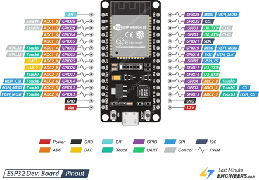

Los GPIO (General Purpose Input/Output) son pines de propósito general que el microcontrolador puede configurar como entradas o salidas digitales, y en algunos casos como entradas analógicas o salidas PWM.
En el ESP32 y en el entrenador QMT-020, cada periférico se encuentra conectado a uno o varios GPIO específicos, por lo que es fundamental conocer su asignación para programarlos correctamente.

-
Modos de funcionamiento
En MicroPython, un pin se define con el módulo machine:
from machine import Pin pin = Pin(2, Pin.OUT) # GPIO 2 como salida
Los modos más comunes son:
- Pin.OUT -> Salida digital: controla dispositivos como LEDs o relés.
- Pin.IN -> Entrada digital: lee el estado de sensores o pulsadores.
- Pin.OPEN_DRAIN -> Salida de drenaje abierto: útil para buses compartidos o comunicación con pull-ups externas.
-
Entradas digitales
Un GPIO configurado como entrada puede detectar:
- Nivel alto (1) -> Generalmente tensión cercana a 3.3V en el ESP32.
- Nivel bajo (0) -> Tensión cercana a 0V.
Ejemplo:
boton = Pin(4, Pin.IN) estado = boton.value()
-
Salidas digitales
Permiten enviar señales lógicas para encender o apagar un componente.
led = Pin(2, Pin.OUT) led.value(1) # Encender led.value(0) # Apagar
-
Pines especiales
En el ESP32, algunos pines tienen funciones adicionales o restricciones:
- GPIO 34, 35, 36, 39 -> Solo entradas analógicas, no salidas.
- GPIO 0, 2, 15 -> Usados en arranque, requieren cuidado.
- GPIO con función ADC -> Permiten lectura de valores analógicos (sensores de luz, potenciómetros, etc.).
-
Buenas prácticas en el uso de GPIOs
- Verificar siempre la tabla de asignación de pines del QMT-020 antes de programar.
- Evitar usar pines reservados para comunicación si no es necesario (UART, I2C, SPI).
- Activar resistencias internas pull-up o pull-down cuando el sensor lo requiera:
boton = Pin(4, Pin.IN, Pin.PULL_UP)